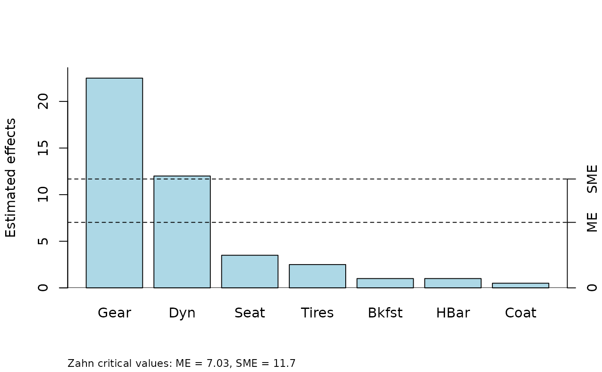
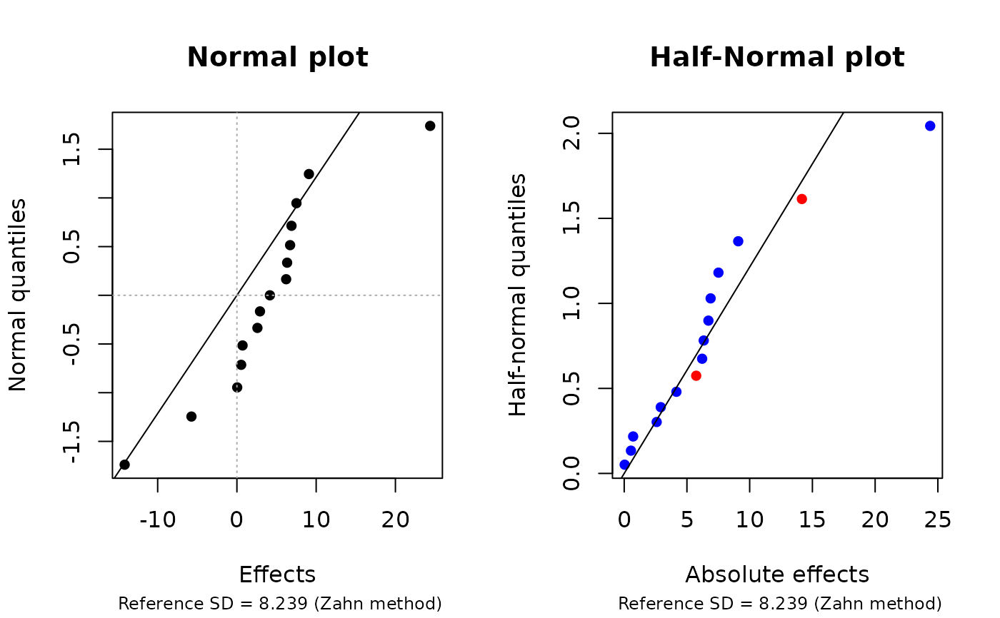

Effect examples
examples.RdPublished or simulated examples of effects.
Format
Each is a named numeric vector of effect estimates from unreplicated experiments.
Also, each has an additional mean attribute containing the response mean.
Details
- pdEff
A vector of 15 effects from a four-factor experiment on process development. The experiment is described in Box, Hunter, and Hunter (2005), Section 5.13, and the effects are tabulated in Table 5.11, page 200. The response variable is conversion percent, and the experiment involves one replication each of each combination of four two-level factors: catalyst charge (C), temperature (T), pressure (P), and concentration (c). (The text labels these factors as 1, 2, 3, and 4 but we elected to use more suggestive alphabetic labels.) The effects are in standard (Yates) order.
- bikeEff
A vector of 7 effects from a saturated experiment in 8 runs with 7 two-level factors. The experiment is described in Box, Hunter, and Hunter (2005), Section 6.5 and the effects are reported in Table 6.5, page 245. The response variable is time required to climb a particular hill, and the factors are seat height, dynamo, gear, handlebars, raincoat, breakfast, and tires. (Effect labels are abbreviations of these.) The effects are in standard order of the first, second, and fourth factors.
- viseEff
A vector of 15 effect estimates from a fictitious experiment, simulated by the package developer. The effects are labeled alphabetically, A-O, in stanradr order of A, B, D, and H.
- shnkEff, shnkDisp
Vectors of location and dispersion effects, respectively, from the speedometer-cable shrinkage example discussed in Box, Hunter, and Hunter (2005), Section 6.14. Each vector is of length 15. The effect names are 4-letter abbreviations of the factor names. Effects are computed anew from the data in Table 6.18:
shnkEfffrom the “Average” response andshnkDispfrom the “Log Variance” response. The table in the book actually gives variances, not log variances, and logs were taken before dispersion effects were calculated. A few effect values differ somewhat from those in the book.
References
Box, GEP, Hunter, JS, and Hunter, WG (2005) Statistics for Experimenters (2nd ed) New York: John Wiley & Sons
Examples
require("unrepx")
parplot(bikeEff, method = "Zahn")

opar <- par(mfcol = c(1,2))
hnplot(shnkEff, half = FALSE, main = "Normal plot")
hnplot(shnkEff, half = TRUE, main = "Half-Normal plot")

# Why ordinary normal plots are a bad idea
# Both plots have the same reference line
par(opar)
# Note - Examples in help pages for hnplot, parplot, refplot, and eff.test
# use pdEff for illustration
if (FALSE) {
# Do try this at home:
hnplot(viseEff, ID = TRUE)
refplot(viseEff, ID = TRUE)
}